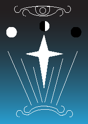
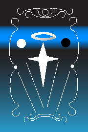
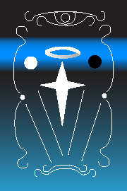
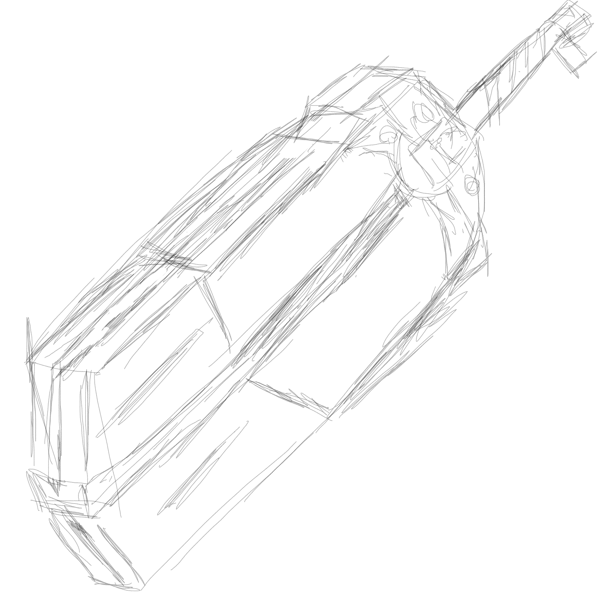
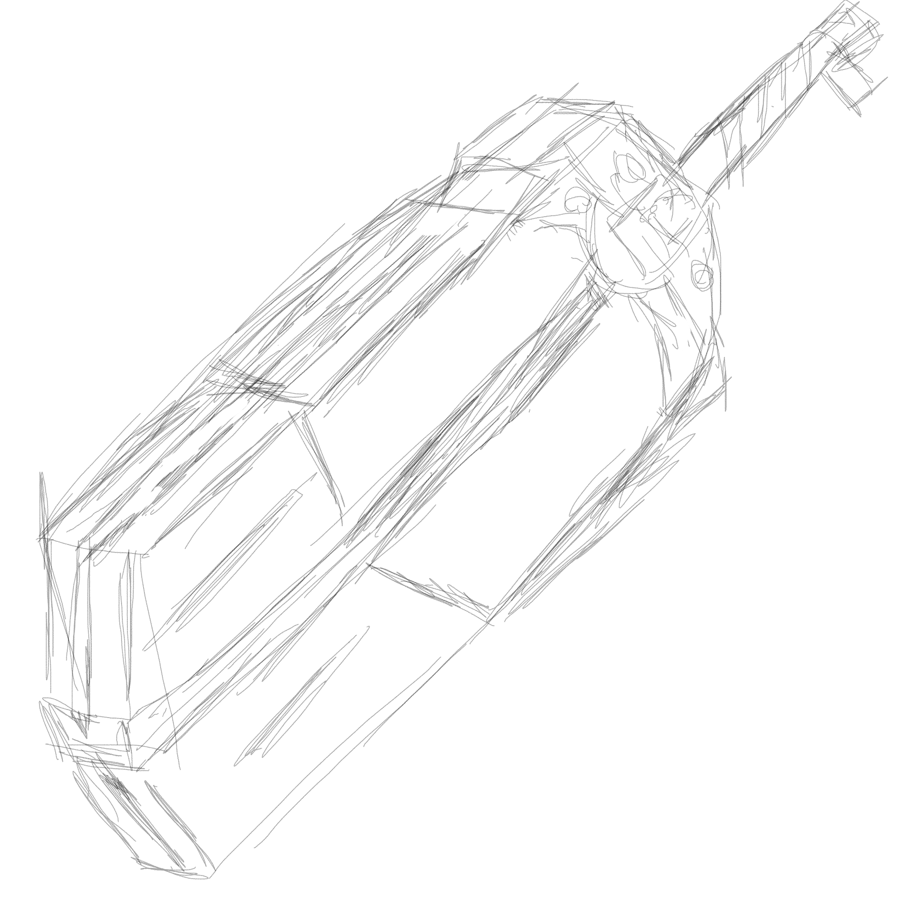
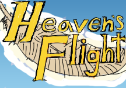

Heaven’s flight is an experimental card game completed for a game jam in late 2024. This project was completed with a team of three with the project team lead Verden acting as the designer and Erica acting as a second artist. My role in the project was as an artist, making card art and also card back art. The game was originally conceived of as a trading card game where players collected weapons and hero cards that wielded the weapons with different effects, but eventually changed into a game about angles fighting in duels with a limited move set of 7 moves distributed on a move set field or panel. This change took place after one of our team members voiced their dislike for the original game’s design, and as the time limit for completing the project drew nearer.
My initial task for this project was the completion of card back art for the back of the card deck, with the initial designs being completed before any other work in the project. These designs were created in illustrator using gradients and line curves. I went with a night sky and mystical theme for the card art, since the subject matter was relating to angelic weapons found in the desert, and I wanted the desert night sky to be the look and feel of the card back. While the initial design was good, Verden wanted something that fit the theme of the game a little more. He specifically wanted to include auroras and symbols relating directly to angles to be included in the card art. The green stripe and the white hallo were added to match with this theme.
 

As the game came closer to its deadline I was tasked with completing card art for the game. I was given a list of cards on a spread sheet and asked to do card art for the cards listed. My strategy for completing this art was to first do preliminary sketches for the card art on the computer using light outlines and then show them to Verden for approval before making full color illustrations, and to do this for all of the cards in the series at once rather than completing one at a time. I submitted these initial sketches to Verden for approval and received some notes on how he wanted them changed. Unfortunately the entire format of our game was changed before I could complete these designs.


 



In the development of the final card designs the format of our game changed from a trading card game with weapons and abilities to a dueling game with move sets. The original cad designs were abandoned and I was given a new set of 7 card moves to complete for the new game format. The theme of this game was angles dueling in heaven, and the cards I had to complete were attack, defend, gamble, standby, buff, revive and hunted. I made these designs in photoshop and drew and colored them using line art and background colors. I intended to paint over these initial designs to get a more painterly look to the cards, however we ran out of time before I had a chance to do this.


The game jam required some extra materials to be submitted to before our game could be entered on the website. These included a banner image, a logo image, and a cover image. I made all of these designs in photoshop with a somewhat tight deadline, and am particularly proud of the banner image. I also made a short video of gameplay to be submitted to the jam website. Unfortunately Verden could not figure out how to submit certain images to the jam page, and our submission was not submitted on time, which means that I can not show the final game jam webpage here.
